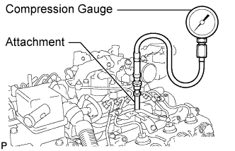

ENGINE > ON-VEHICLE INSPECTION |
| 1. INSPECT ENGINE IDLE SPEED |
When using the intelligent tester:
Warm up and stop the engine.
Connect the intelligent tester to the DLC3.
Turn the engine switch on (IG).
Enter the following menus:
Powertrain / Engine / Data List / Engine Speed.
Inspect the engine idle speed.
| Item | Specified Condition |
| for Automatic Transmission | 550 to 650 rpm |
| for Manual Transmission | 500 to 600 rpm |
Turn the engine switch off.
Disconnect the intelligent tester from the DLC3.
When not using the intelligent tester:
Warm up and stop the engine.
 |
Connect a tester probe of a tachometer to terminal 9 (TAC) of the DLC3 with SST.
Inspect the engine idle speed.
| Item | Specified Condition |
| for Automatic Transmission | 550 to 650 rpm |
| for Manual Transmission | 500 to 600 rpm |
Disconnect the tester probe from terminal 9 (TAC) of the DLC3.
| 2. INSPECT MAXIMUM ENGINE SPEED |
Start the engine.
Fully depress the accelerator pedal.
Check the maximum engine speed.
| 3. INSPECT COMPRESSION |
Warm up and stop the engine.
Remove the 8 glow plugs (Click here).
Inspect the cylinder compression pressure.
 |
Insert SST (attachment) into the glow plug hole.
Connect SST (compression gauge) to SST (attachment).
While cranking the engine, measure the compression pressure.
If the cylinder compression is low, pour a small amount of engine oil into the cylinder through the glow plug holes. Then inspect the cylinder compression again.
If adding oil increases the compression pressure, the piston rings and/or cylinder bore may be worn or damaged.
If the pressure stays low, the valve may be stuck or seated improperly, or there may be leakage from the gasket.
Remove SST (attachment and compression gauge).
Install the 8 glow plugs (Click here).